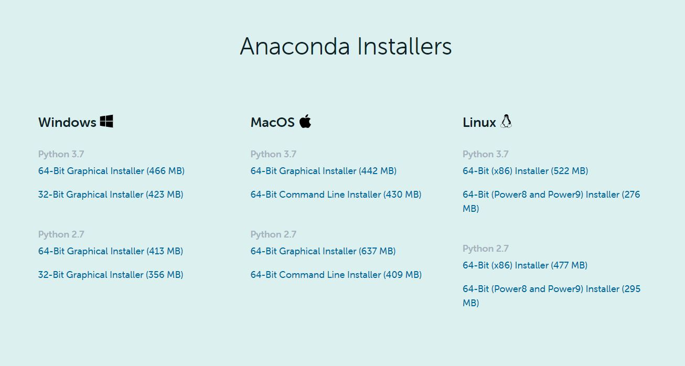
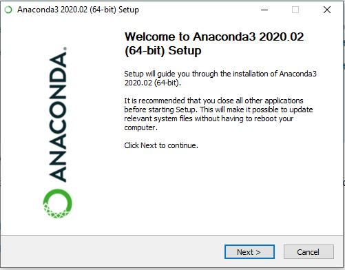
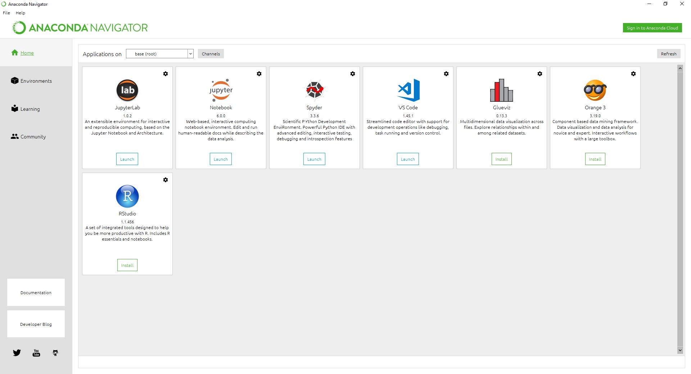

Introducción al lenguaje Python¶
90 min | Última modificación: Junio 07, 2020.
Acerca de Python¶
Python es sin duda alguna uno de los lenguajes de programación más populares que existen hoy en día. En comparación con otros lenguajes de programación, Python presume de tener una curva de aprendizaje pequeña y un gran potencial, ya que hablamos de un lenguaje con el que es posible realizar tareas de todo tipo, como por ejemplo:
Desarrollo de aplicaciones web
Inteligencia artificial
Automatización de tareas
Análisis avanzado de datos
Lenguaje de programación Python
Guido van Rossum en 2006
Open source¶
Aplicaciones¶
El Python Package Index (PyPI) o en español significa Índice de paquetes de Python alberga miles de módulos de terceros para Python.
Tanto la biblioteca estándar de Python como los módulos aportados por la comunidad permiten infinitas posibilidades.
Desarrollo web e Internet.
Científico y numérico.
Educación.
Desarrollo de software
Aplicaciones de negocio.
Características¶
Se trata de un lenguaje open source en el que destaca su legibilidad. El código es limpio y ordenado, lo cual convierte a Python en un lenguaje cómodo de leer y escribir. En definitiva: un lenguaje de programación fácil de entender y aprender.
Al contrario que otros lenguajes de programación como C o Java, Python es un lenguaje interpretado, lo que significa que no es necesario compilar el código de Python antes de ejecutarlo. El intérprete irá analizando y ejecutando el código línea por línea.
Otra de las principales características de Python es que es que es un lenguaje de programación dinámicamente tipado, es decir, el programador no tiene que declarar el tipo de las variables si no que este se deduce automáticamente en el tiempo de ejecución.
# La variable "edad" guarda el valor como integer
edad = 25
print("La variable 'edad' es de tipo: " + str(type(edad)))
# Ahora "edad" guarda un string
edad = "Tengo 25 años"
print("La variable 'edad' es de tipo: " + str(type(edad)))
Por último, comentar que una de las mayores ventajas de este lenguaje de programación orientado a objetos es la extensa variedad de liberías y frameworks disponibles para cualquier propósito, lo cual hace que Python sea la opción perfecta para el desarrollo de aplicaciones de cualquier tipo.
Instalación de Anaconda¶
Para el desarrollo del curso de introducción a la ciencia de datos necesitarás tener listo tu ambiente de desarrollo local, en tu computadora de escritorio o portátil. En este tutorial explicaremos una manera sencilla de configurar Anaconda Navigator para poder utilizar los Jupyter Notebook como ambiente de aprendizaje de programación como un Científico de Datos.
¿Por qué instalar Python y Anaconda en mi ordenador?¶
Python es un lenguaje sencillo, rápido y liviano y es ideal para aprender, experimentar, practicar y trabajar en ciencia de datos.
Utilizaremos la Suite de Anaconda que nos facilitará la tarea de instalar el ambiente e incluirá las Jupyter Notebooks, que es una aplicación que nos ayudará a hacer paso a paso ejercicios de ciencia de datos, crear visualizaciones de datos y escribir comentarios tal como si se tratase de un cuaderno de notas del colegio o la universidad.
Esta Suite es multiplataforma y se puede utilizar para Windows, Linux y Macintosh. En mi caso descargaré la versión para Windows, pero para otro sistema operativo será similar.
Paso 1 – Descargar Anaconda¶
En este paso veremos como descargar anaconda a nuestro disco y obtener esta suite científica de Python
Nos dirigimos a la Home de Anaconda e iremos a la sección de Download (descargas)
Elegimos nuestra plataforma: Windows, Mac o Linux (en mi caso seleccionaré la de Windows)

Atención: Elegir la versión de Python 3.7 (y no la de 2.7) y seleccionar el instalador Gráfico (Graphical Installer)
Con esto guardaremos en nuestro disco duro un archivo con el nombre similar a Anaconda3-2020.02-Windows-x86_64.exe
Paso 2 – Instalar Anaconda¶
En este paso instalaremos la app en nuestro sistema. > Deberá tener permisos de Administrador si instala para todos los usuarios. De lo contrario, la instalación quedará solo para el usuario.
Ejecutamos el archivo que descargamos haciendo doble click.
Se abrirá un «Típico Wizard» de instalación Ver Video tutorial de instalación.

Seguiremos los pasos, podemos seleccionar instalación sólo para nuestro usuario, seleccionar la ruta en disco donde instalaremos y listo.
Al instalarse el tamaño total podrá superar 1Gb en disco.
Paso 3 – Iniciar y Actualizar Anaconda¶
En este paso comprobaremos que se haya instalado correctamente y verificar tener la versión más reciente.
Anaconda viene con una suite de herramientas gráficas llamada «Anaconda Navigator». Iniciemos la aplicación y veremos una pantalla como esta:

Material complementario¶
Tu primer programa¶
En informática, un programa Hola Mundo es el que imprime el texto «¡Hola, Mundo!» en un dispositivo de visualización, en la mayoría de los casos una pantalla de monitor. Este programa suele ser usado como introducción al estudio de un lenguaje de programación, siendo un primer ejercicio típico, y se lo considera fundamental desde el punto de vista didáctico.
El Hola Mundo se caracteriza por su sencillez, especialmente cuando se ejecuta en una interfaz de línea de comandos. En interfaces gráficas la creación de este programa requiere de más pasos.
El programa Hola Mundo también puede ser útil como prueba de configuración para asegurar que el compilador, el entorno de desarrollo y el entorno de ejecución estén instalados correctamente y funcionando.
Sintaxis¶
Indentación¶
Un aspecto muy importante a mencionar antes de comenzar a programar en Python es el hecho de que Python utiliza la indentación (también conocida como sangría, tabulación o espaciado) para delimitar los bloques de código. La indentación estándar de Python requiere una tabulación de 4 espacios:
[2]:
x = 5
if x == 5:
# tabulación de 4 espacios
print("El valor de x es 5.")
El valor de x es 5.
En caso contrario, al ejecutar nuestro código recibiremos un error como el siguiente
IndentationError: expected an indented block
Comentarios¶
Es posible agregar comentarios a sus scripts de Python. Los comentarios son importantes para asegurarse que usted y otros puedan entender de qué se trata su código.
Para agregar comentarios a su script Python, puede usar la # etiqueta. Estos comentarios no se ejecutan como código Python, por lo que no influirán en su resultado. Como ejemplo, tome el comentario en la celda abajo # Division; se ignora por completo durante la ejecución.
[3]:
# Division
print(1/2)
0.5
Encima del print(7 + 10), agregue el comentario # Suma
[1]:
# Suma
print(7 + 10)
17
Ayudas¶
Puede solicitar la ayudar del interprete de Python, ejecutando:
[13]:
help(pd)
Help on package pandas:
NAME
pandas
DESCRIPTION
pandas - a powerful data analysis and manipulation library for Python
=====================================================================
**pandas** is a Python package providing fast, flexible, and expressive data
structures designed to make working with "relational" or "labeled" data both
easy and intuitive. It aims to be the fundamental high-level building block for
doing practical, **real world** data analysis in Python. Additionally, it has
the broader goal of becoming **the most powerful and flexible open source data
analysis / manipulation tool available in any language**. It is already well on
its way toward this goal.
Main Features
-------------
Here are just a few of the things that pandas does well:
- Easy handling of missing data in floating point as well as non-floating
point data.
- Size mutability: columns can be inserted and deleted from DataFrame and
higher dimensional objects
- Automatic and explicit data alignment: objects can be explicitly aligned
to a set of labels, or the user can simply ignore the labels and let
`Series`, `DataFrame`, etc. automatically align the data for you in
computations.
- Powerful, flexible group by functionality to perform split-apply-combine
operations on data sets, for both aggregating and transforming data.
- Make it easy to convert ragged, differently-indexed data in other Python
and NumPy data structures into DataFrame objects.
- Intelligent label-based slicing, fancy indexing, and subsetting of large
data sets.
- Intuitive merging and joining data sets.
- Flexible reshaping and pivoting of data sets.
- Hierarchical labeling of axes (possible to have multiple labels per tick).
- Robust IO tools for loading data from flat files (CSV and delimited),
Excel files, databases, and saving/loading data from the ultrafast HDF5
format.
- Time series-specific functionality: date range generation and frequency
conversion, moving window statistics, date shifting and lagging.
PACKAGE CONTENTS
_config (package)
_libs (package)
_testing
_typing
_version
api (package)
arrays (package)
compat (package)
conftest
core (package)
errors (package)
io (package)
plotting (package)
stats (package)
testing
tests (package)
tseries (package)
util (package)
SUBMODULES
_hashtable
_lib
_tslib
offsets
CLASSES
builtins.object
Panel
SparseDataFrame
SparseSeries
__DatetimeSub
__SparseArraySub
class Panel(builtins.object)
| Data descriptors defined here:
|
| __dict__
| dictionary for instance variables (if defined)
|
| __weakref__
| list of weak references to the object (if defined)
SparseArray = class __SparseArraySub(builtins.object)
| Methods defined here:
|
| emit_warning(dummy=0)
|
| ----------------------------------------------------------------------
| Static methods defined here:
|
| __new__(cls, *args, **kwargs)
| Create and return a new object. See help(type) for accurate signature.
|
| ----------------------------------------------------------------------
| Data descriptors defined here:
|
| __dict__
| dictionary for instance variables (if defined)
|
| __weakref__
| list of weak references to the object (if defined)
class SparseDataFrame(builtins.object)
| Data descriptors defined here:
|
| __dict__
| dictionary for instance variables (if defined)
|
| __weakref__
| list of weak references to the object (if defined)
class SparseSeries(builtins.object)
| Data descriptors defined here:
|
| __dict__
| dictionary for instance variables (if defined)
|
| __weakref__
| list of weak references to the object (if defined)
datetime = class __DatetimeSub(builtins.object)
| Methods defined here:
|
| emit_warning(dummy=0)
|
| ----------------------------------------------------------------------
| Static methods defined here:
|
| __new__(cls, *args, **kwargs)
| Create and return a new object. See help(type) for accurate signature.
|
| ----------------------------------------------------------------------
| Data descriptors defined here:
|
| __dict__
| dictionary for instance variables (if defined)
|
| __weakref__
| list of weak references to the object (if defined)
DATA
IndexSlice = <pandas.core.indexing._IndexSlice object>
NA = <NA>
NaT = NaT
__docformat__ = 'restructuredtext'
__git_version__ = '3adf3340453d6704d4a2cb47058214cc697a7d29'
describe_option = <pandas._config.config.CallableDynamicDoc object>
get_option = <pandas._config.config.CallableDynamicDoc object>
np = <pandas.__numpy object>
options = <pandas._config.config.DictWrapper object>
reset_option = <pandas._config.config.CallableDynamicDoc object>
set_option = <pandas._config.config.CallableDynamicDoc object>
VERSION
1.0.3
FILE
c:\users\dnaja\anaconda3\lib\site-packages\pandas\__init__.py
C:\Users\dnaja\Anaconda3\lib\inspect.py:441: FutureWarning: The pandas.datetime class is deprecated and will be removed from pandas in a future version. Import from datetime instead.
srch_obj = srch_cls.__getattr__(cls, name)
C:\Users\dnaja\Anaconda3\lib\pydoc.py:216: FutureWarning: The pandas.datetime class is deprecated and will be removed from pandas in a future version. Import from datetime instead.
fields = getattr(object, '_fields', [])
[14]:
import pandas as pd
pd?
Puede consultar los detalles acerca del ‘objeto’ para esto use como ejemplo la librería pd ejecutando el siguiente comando:
Documentación de la librería¶
Escriba la librería pd. y luego escribe dos underscore y presione dos veces la tecla tabular para usar la completado automático del interprete al estilo de completación de lineas de comandos en el shell UNIX/Linux para ayudar a la introspección del lenguaje y sus librerías.
[8]:
import pandas as pd
print (pd.__doc__)
pandas - a powerful data analysis and manipulation library for Python
=====================================================================
**pandas** is a Python package providing fast, flexible, and expressive data
structures designed to make working with "relational" or "labeled" data both
easy and intuitive. It aims to be the fundamental high-level building block for
doing practical, **real world** data analysis in Python. Additionally, it has
the broader goal of becoming **the most powerful and flexible open source data
analysis / manipulation tool available in any language**. It is already well on
its way toward this goal.
Main Features
-------------
Here are just a few of the things that pandas does well:
- Easy handling of missing data in floating point as well as non-floating
point data.
- Size mutability: columns can be inserted and deleted from DataFrame and
higher dimensional objects
- Automatic and explicit data alignment: objects can be explicitly aligned
to a set of labels, or the user can simply ignore the labels and let
`Series`, `DataFrame`, etc. automatically align the data for you in
computations.
- Powerful, flexible group by functionality to perform split-apply-combine
operations on data sets, for both aggregating and transforming data.
- Make it easy to convert ragged, differently-indexed data in other Python
and NumPy data structures into DataFrame objects.
- Intelligent label-based slicing, fancy indexing, and subsetting of large
data sets.
- Intuitive merging and joining data sets.
- Flexible reshaping and pivoting of data sets.
- Hierarchical labeling of axes (possible to have multiple labels per tick).
- Robust IO tools for loading data from flat files (CSV and delimited),
Excel files, databases, and saving/loading data from the ultrafast HDF5
format.
- Time series-specific functionality: date range generation and frequency
conversion, moving window statistics, date shifting and lagging.
[9]:
print(pd.__name__)
pandas
La librería estándar de Python¶
La librería estándar es un conjunto de módulos y paquetes que se distribuyen junto con Python. Muchas de las operaciones más comúnes de la programación diaria ya están implementadas en ella, de modo que podemos concentrarnos en lo que realmente nos ocupa. Encontrarás la lista de todos los módulos y paquetes junto con su documentación en The Python Standard Library
[1]:
import math
# Raíz cuadrada.
print(math.sqrt(16))
4.0
O bien random, que implementa funciones para trabajar con números aleatorios.
[2]:
from random import randint, choice
# Número aleatorio entre 1 y 10.
print(randint(1, 10))
# Retorna un elemento aleatorio de la lista.
print(choice(["Python", "C", "C++", "Java"]))
4
Java
Modulos Python más usados * os * datetime * time * sys * math * random * pandas * numpy
Instalando módulos de terceros¶
La colección de módulos y paquetes desarrollados por la enorme comunidad de programadores de Python en todo el mundo está alojada en PyPI (Python Package Index).
Cada uno de estos paquetes está identificado por un nombre. Para instalar alguno de ellos, utilizaremos una herramienta llamada pip que se incluye con la instalación de Python. El comando es el siguiente.
[ ]:
pip install paquete
Por ejemplo, para instalar pandas, el paquete más famoso de Python que permite interactuar con DataFrame:
[ ]:
pip install pandas
Por último confirma que el paquete se ha instalado correctamente desde la consola interactiva.
[ ]:
import pandas as pd
Buenas prácticas de programación de Python¶
Si programas con Python o estás aprendiendo el lenguage de programación Python estos mandamientos te van a ser muy útiles:
Los nombres de los ficheros deben escribirse en minúscula. Ejemplo:
hola.py calculadora.py
Las llamadas a funciones se escriben en minúscula. Ejemplo:
print() input()
Las variables se escriben en minúscula y, de estar formadas por varias palabras, éstas van unidas por guiones bajos. Ejemplo:
balones piezas_de_repuesto
Los tipos de dato se escriben en minúscula. Ejemplo:
str int
Pon un espacio después de cada coma. Ejemplo:
print('Tienes', num_zapatos, 'zapatos y', num_blusas, 'blusas.')
Pon un espacio antes y después de cada operador. Ejemplo:
8 + 2 total += 6
Indenta con 4 espacios; nunca uses el tabulador. Ejemplo:
if nombre == 'Ángel':
print('Hola', nombre)
1234
Escribe abundantes comentarios en tu código, describiendo cada detalle, para hacer que sea lo más claro y legible posible.
Algunas de las recomendaciones respecto a los estilos de programación de python están recogidas en la Guía oficial de Estilos PEP8 de Python.
Operadores y expresiones¶
Los operadores son símbolos especiales que permiten realizar operaciones aritméticas o lógicas.
Operadores aritméticos¶
Los operadores aritméticos se utilizan para realizar operaciones matemáticas (suma, resta, multiplicación,…). La tabla siguiente contiene todos los operadores aritméticos permitidos por Python:
Operador |
Ejemplo |
Significado |
|---|---|---|
a + b |
Suma |
|
a - b |
Resta |
|
-a |
Negación (asignar valor negativo) |
|
* |
a * b |
Multiplicación |
/ |
a / b |
División |
% |
a % b |
Módulo (resto de la división) |
// |
a // b |
División entera |
** |
a ** b |
Exponente |
[2]:
x = 5
y = 2
print(x + y) # 7
print(x - y) # 3
print(x * y) # 10
print(x / y) # 2.5
7
3
10
2.5
Operadores lógicos¶
Los operadores lógicos and, or, y not evalúan valores devolviendo también True o False como resultado:
Operador |
Ejemplo |
Significado |
|---|---|---|
and |
a and b |
True si a y b son True |
or |
a or b |
True si a o b son true |
not |
not b |
True si b es falso |
Python como calculadora¶
Python es perfectamente adecuado para hacer cálculos básicos. Además de la suma, resta, multiplicación y división, también hay soporte para operaciones más avanzadas como:
Exponenciación: (**). Este operador eleva el número a su izquierda a la potencia del número a su derecha. Por ejemplo 4**2 dará 16.
Modulo: (%). Este operador devuelve el residuo de la división del número a la izquierda por el número a su derecha. Por ejemplo 18 % 7 igual 4.
El código en la celda de abajo da algunos ejemplos.
[4]:
# Addition, subtraction
print(5 + 5)
print(5 - 5)
# Multiplication, division, modulo, and exponentiation
print(3 * 5)
print(10 / 2)
print(18 % 7)
print(4 ** 2)
10
0
15
5.0
4
16
Agregue código para calcular cuánto dinero obtiene después de 7 años e imprima el resultado.
[5]:
print(100*(1.1**7))
194.87171000000012
Un caracter de subrayado _ se usa para indicar el resultado del calculo anterior. Dos caracteres __ indican el penúltimo resultado; tres caracteres _ indican el antepenúltimo resultado. Igualmente, se puede usan In[1] para obtener el contenido de la primera celda, In[2] para la segunda y así sucesivamente. De igual forma, los resultados pueden obtenerse como Out[1], Out[2], etc.
[6]:
1.1
[6]:
1.1
[7]:
1.1 + _
[7]:
2.2
[8]:
1.1 + _
[8]:
3.3000000000000003
[9]:
round(_, 2)
[9]:
3.3
[10]:
Out[6]
[10]:
1.1
[11]:
In[7]
[11]:
'1.1 + _'